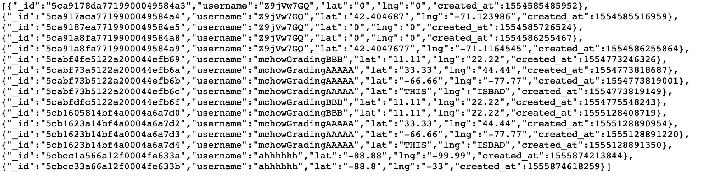
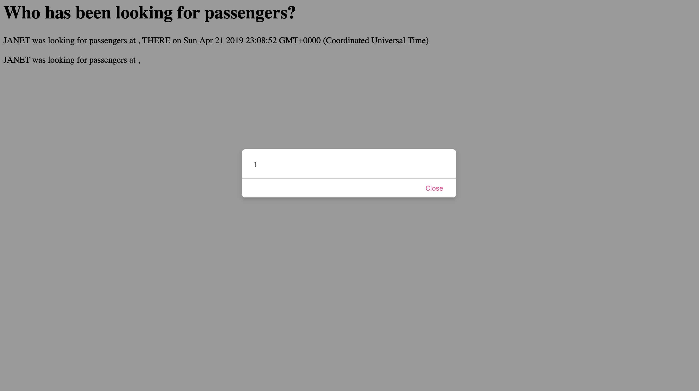

I was assigned to a partner -- Sandra Alguacil -- and hired by Ming to hack into her Assignment 3 Server Side Assignment.
In testing and hacking into her application, I plan to perform injection attacks and XSS attacks.
In order to perform those attacks, I will assign values to the keys in the URL query strings that the client should not be able to access (such as database information), I will play around with how robust her code was in dealing with different data types, and I will insert alert scripts through curling as well.
In testing Sandra's program, I found a couple of security issues. The first security breach involved not denying people from accessing data that they are not supposed to access. The second security breach involved not converting user input to the correct data/disallowing from inputting certain data types in certain fields. More specifically, Sandra had allowed users to type in words in the "lat" and "lng" fields, which are only inteded for numerical values. Finally, the last issue I had found in her program put users at risk. Usually, web applications should adhere to the Single-Origin Policy; that is, only allowing her own web application to retrieve content. However, Sandra's program allows hackers to easily insert their own code into her HTML webpage. This would result in her web page running potentially malicious programs from other websites that put the user at risk.
I modified her query string to the following:
"https://rocky-inlet-73664.herokuapp.com/passenger.json?username[$ne]"
This is BAD because users can then see all input/requests that have been made to the server and access private information such as other people's locations
Query string
Allowing users to be able to access all the data stored in the database is an extreme violation of privacy. It allows everyone to access sensitive information of all other users.

The lesson here is to never trust user input. She might try validating user input on the server side in order to block off malicious inputs.
Allowing users to be able to modify content of the webpage is a serious concern as that could lead to the webpage displaying nonsensical information. It also destroys the functioning of the website as well as content intended for displaying specific information would be stripped of their ability to display that data
This is also BAD because...
I curled the following (the spaces in the script tag are so the script popup doesn't activate):
(curl --data "username=JANET&lat=< script >alert(1)< /script >&lng=THERE https://rocky-inlet-73664.herokuapp.com/"rides)
Here, I set the value of the "lat" to a script, which loaded a popup with the number 1; Refer to the picture below:
